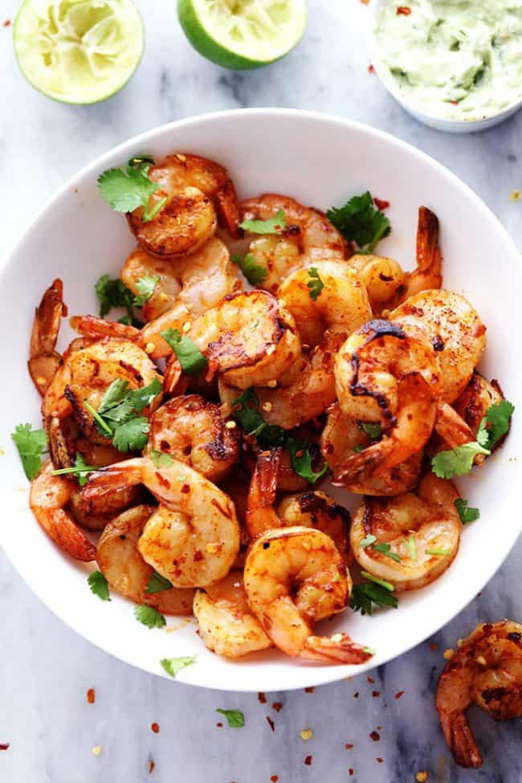

Spicy Lime Grilled Shrimp

This is a really easy recipe but the spice and lime offer a nice kick. You can make this recipe quick
and goes well with multiple side dishes. Also can be made for appetizers.
- Shrimp Peeled and deveined
- lime juiced
- Cajun seasoning
- Cooking oil
- Mix together Cajun seasoning, lime juice, and oil in a resealable plastic bag. Add shrimp,
coat with marinade, squeeze out excess air, and seal the bag. Marinate in the refrigerator for 20 minutes.
- Preheat an outdoor grill for medium heat and lightly oil the grate. If using pan heat to medium
and add oil to pan after its preheated.
- Remove shrimp from marinade; shake off excess. Discard remaining marinade.
- Cook shrimp on the preheated grill or pan until bright pink on the outside and the meat is no longer transparent in the center,
about 2 to 4 minutes per side.
- Serve hot and enjoy